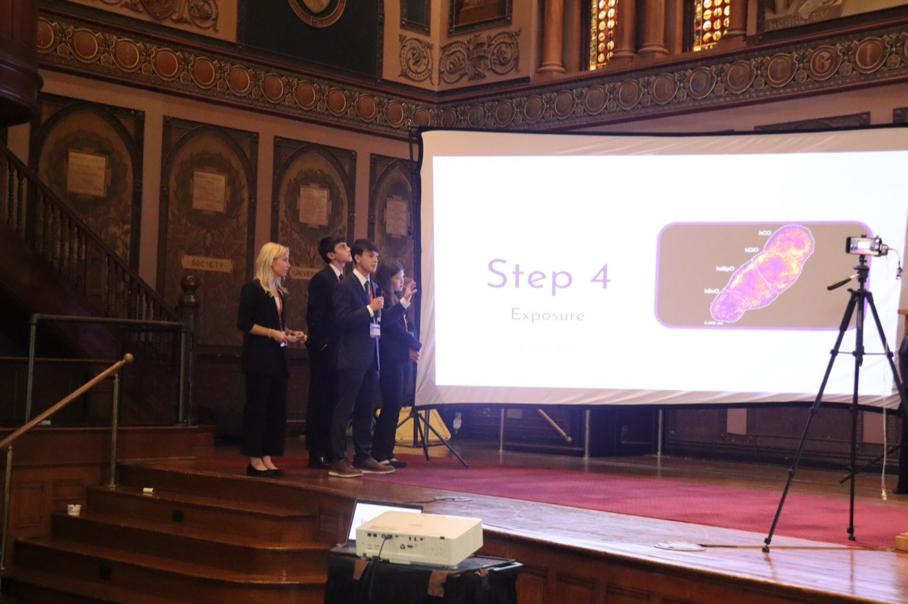
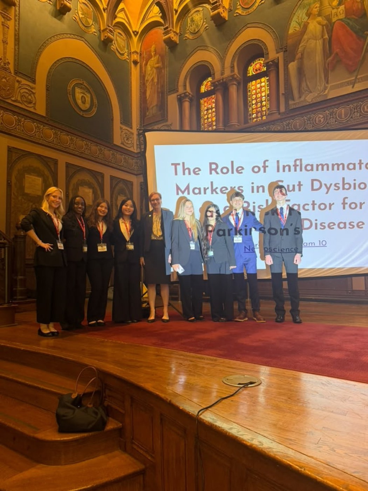
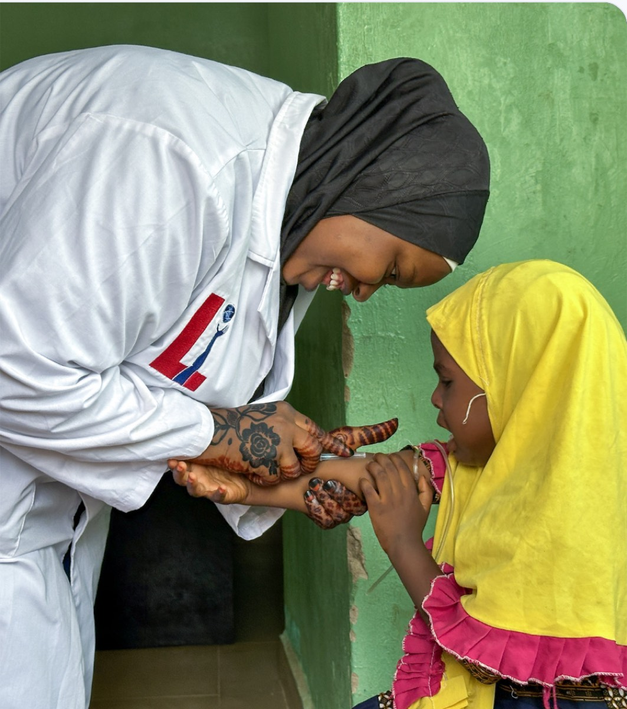
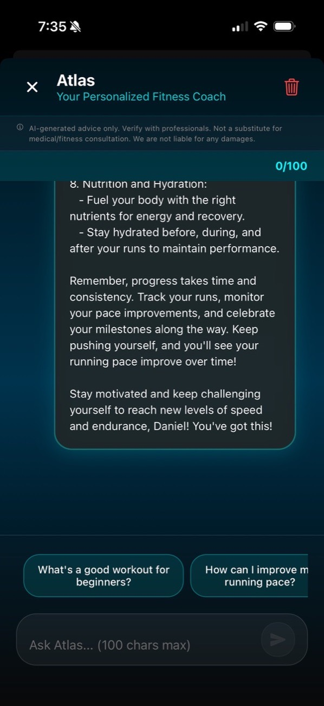
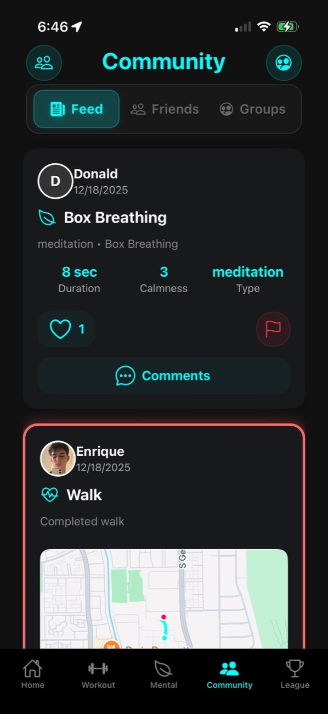
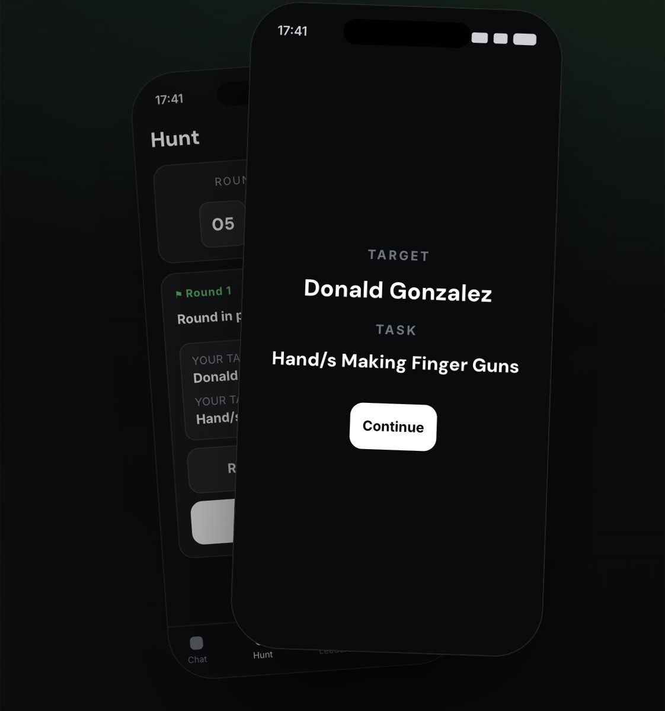
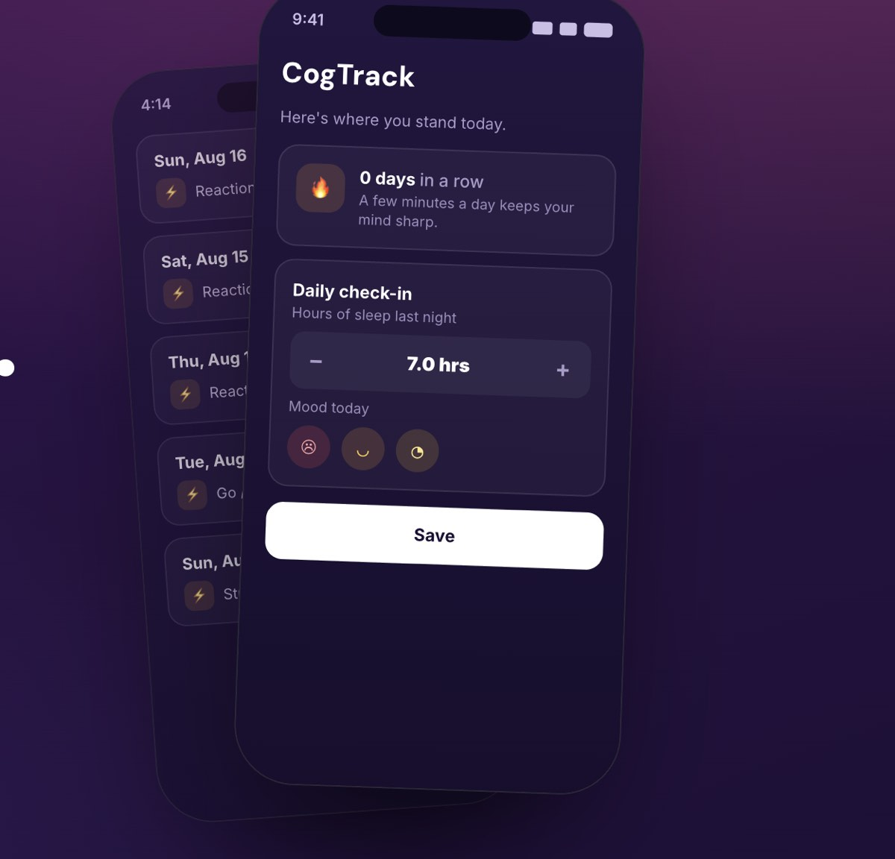

A selection of my current work in research, global health, and software.
Neuroscience & Neuroethics Research



Selected for the Advanced Medical Neuroscience Internship, where I worked alongside researchers and faculty at Georgetown University on neuroscience and neuroethics.
My ethical investigation examined gut dysbiosis-driven inflammation and its potential role in the development of Parkinson's disease through the vagal pathway. I reviewed the literature on gut dysbiosis, alpha-synuclein misfolding, and Parkinson's pathology, then built a framework for conducting a holistic ethical review as that research advances. The analysis considered how inflammatory metabolites and LPS produced in the gut may contribute to alpha-synuclein misfolding in enteric neurons, and how human stem cell-derived Gut-Brain Vagal Pathway Assembloids could help establish that relationship, while weighing informed consent, participant privacy, demographic representation, and the ethics of increasingly complex neural organoids.
I presented the work to a panel including Dr. James Giordano, Chief of Georgetown University's Neuroethics Studies Program, and Dr. Rachel Wurzman, a Dana Foundation Fellow in Neuroscience and Society.
The internship also included fMRI work at Georgetown's Center for Functional and Molecular Imaging with Dr. Ashley VanMeter, transcranial direct current stimulation and neuromodulation in Dr. Adam Green's Laboratory for Relational Cognition, a hands-on brain dissection with Professor Tatyana Kliorina, and a session on movement disorders with Dr. Fernando Pagan.
Full Research Page
International Public Health Internship

I am a Public Health track intern in Leadership Initiatives' International Internship Program for the 2026–2027 cycle — a 27-week, six-module program that pairs a student team with a development partner and a project coordinator in Bauchi State, Northern Nigeria, with weekly team meetings and monthly calls with the coordinators in Nigeria.
My team (Team 26614) is partnered with the Jitar Community, a rural community of roughly 5,000 residents along the Bauchi–Gombe Road. We are learning directly from Jitar residents and our coordinator to understand the community's priorities, which residents identified as healthcare access, education, and physical infrastructure. From there the work moves from a baseline needs assessment toward a health education campaign and a grant proposal built around those priorities, with the team fundraising to support it.
Our first deliverable is a community profile of Jitar.
Jitar Community Profile
•
iiphealth.org
Better U LLC
Better U LLC is a social app studio I co-founded with Lucas Borgarello and Enrique Ortiz, built on a simple idea: people improve faster with their friends in it with them. Our tagline is “Get better, together.”
We ship three apps — BetterU Social Fitness, Snapshot, and CogTrack — and the through-line in all of them is the same: it is better with friends, progress you can see, and a little competition. The three of us split product, development, growth, and infrastructure, and handle the business and legal side ourselves.
betteru.com
•
app@betterullc.com
BetterU Social Fitness



BetterU (also called BetterU AI) is Better U LLC's social fitness app: bring your friends, set goals, and turn just showing up into the thing you compete on. It is built with React Native and Expo on a Supabase backend, and covers guided workouts and training plans, wellness sessions with mood history and summaries, an AI trainer that coaches users in context, and a social layer with friends, groups, weekly challenges, and a shared activity feed.
I work mainly on late-stage development and release, including the TestFlight builds and the App Store submission. The app is live on the App Store.
betteruai.com •
@betteruapp •
TestFlight beta
Snapshot

Snapshot is Better U LLC's photo tag game. Everyone in the group gets a secret target and a task, then has to catch that person on camera before someone catches them. Rounds end with blind group voting on the photos, and last place takes a consequence.
It is built on the same React Native and Expo stack as our other apps. I work across product and release alongside my co-founders. Snapshot is live on the App Store.
betteru.com/snapshot
CogTrack

CogTrack is Better U LLC's cognitive training app: a 60-second daily check-in for mood and sleep plus five science-backed tests that turn a few minutes a day into clear trends over time, benchmarked against your age group. It is written in React Native and TypeScript on Expo, with Supabase and on-device storage.
Three tests are working so far. A reaction time task measures mean response speed and variability across ten trials. A Go/No-Go task measures inhibitory control across twenty trials through commission and omission errors. A three-minute SART task measures sustained attention by tracking whether reaction time variability rises in the second half of the task, which is the vigilance decrement. Results are stored locally, one session per day, and plotted on a trends chart.
Working memory and interference tests are next, along with baseline normalization and data export. CogTrack is a self-tracking tool for personal pattern awareness, not a diagnostic or clinical instrument.
betteru.com/cogtrack
Around the Web
Other sites I have built.
Better U LLC ‐ the studio site for Better U LLC, covering the team, the three apps, and our policies.
betteru.com
Vote Daniel Johnson ‐ the campaign site I built for my run for House Council President at Strake Jesuit, under the slogan "Leading With Faith. A Voice For Every Crusader." It carried my platform, a Q&A page where students could ask me questions directly, and a feature that let supporters sign their name onto the page.
pickdaniel.com